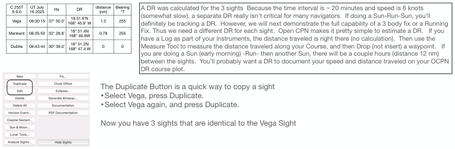

| Previous | Contents | Next |
Altitude sights and coastal navigation · Page 12 of 66
Use Case 1 SW of Hawaii UTC 16 Jul 2025
2. Duplicate and Edit Sights
There are 2 additional sights to input. Use the Duplicate and Edit capability that is available on the Celestial Sights
 |
| Open illustration at full size |
The Duplicate Button is a quick way to copy a sight •Select Vega, press Duplicate. •Select Vega again, and press Duplicate.
Now you have 3 sights that are identical to the Vega Sight
Select one of the Vega sights that was duplicated. Select press EDIT. Then change the Body to Menkent Hs for Menkent, and DR for Menkent. Take the other Vega duplicate and do the same for Dubhe. Use the above data to Edit the 2 additional Sights.
| Previous | Contents | Next |